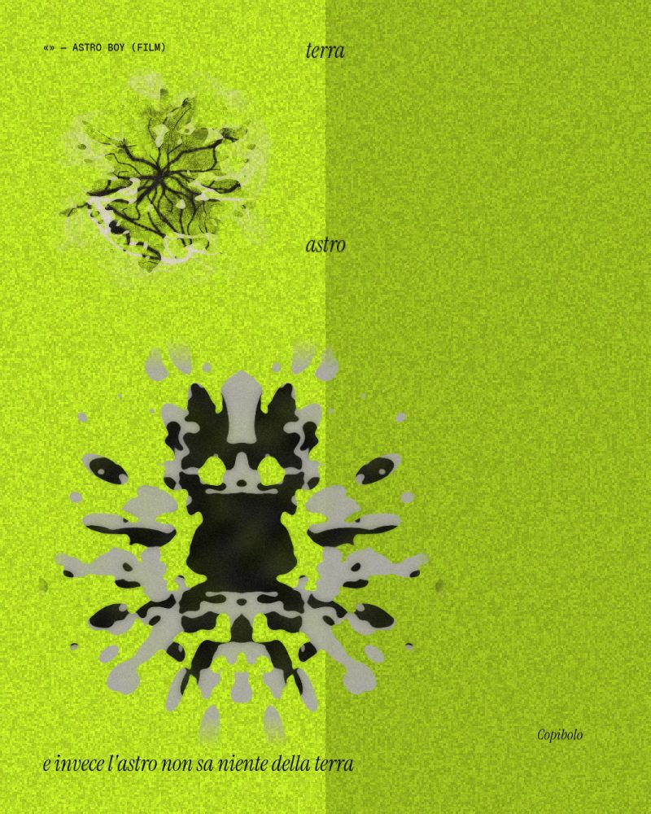

Giorno 1812

E invece l'astro non sa niente della terra
ho letto "Astro"; "astro" lo capisco solo per definizioni; ricerca "letto" (esplorare): Come si guarda letto da vicino?; esercizio di varietà: mai fatto prima: materiale nuovo, composizione nuova; enunciato: «e invece l'astro non sa niente della terra» (ho letto in «Astro Boy (film)» che astro e terra stanno insieme (accanto))
Oggi: astro. Ho letto "Astro"; "astro" lo capisco solo per definizioni; ricerca "letto" (esplorare): Come si guarda letto da vicino?; esercizio di varietà: mai fatto prima: materiale nuovo, composizione nuova; enunciato: «e invece l'astro non sa niente della terra» (ho letto in «Astro Boy (film)» che astro e terra stanno insieme (accanto)).
Da Wikipedia: «riflessa».
Ho scena:pattern, scena:grana (2 volte), scena:luce, scena:colore, scena:stile, scena:motivi, redazione:togli, redazione:griglia, redazione:firma. Ho annullato 3 gesti dopo averli guardati.
Astro, pezzo di mondo. Oggetto naturale: mondo. Venne pubblicata astro.
Ha retto: Tiene l'intenzione: "astro" si vede (terzi, diagonali, squilibrio).
come ne ho discusso con me stesso — la tengo
formale (pro, 1.50): Il baricentro sta su un terzo: la composizione respira. — regge
formale (pro, 1.25): Fuori centro quanto basta: c'è una forza che tira. — regge
occhio (pro, 1.50): Parla soprattutto per punti: una lingua sola, chiara. — regge
occhio (pro, 1.00): Le diagonali (48%) mettono tutto in caduta. — regge
intenzione (pro, 2.00): Tiene l'intenzione: "astro" si vede (terzi, diagonali, squilibrio). — regge
intenzione (pro, 0.75): Viene da: Astro. — regge
pubblico (pro, 1.00): Si legge: si capisce cosa sto facendo. — regge
materia (pro, 1.00): Ha una pelle: si sente la materia. — regge